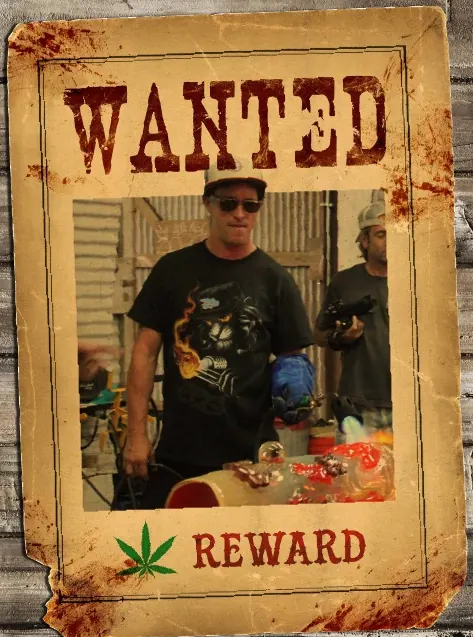
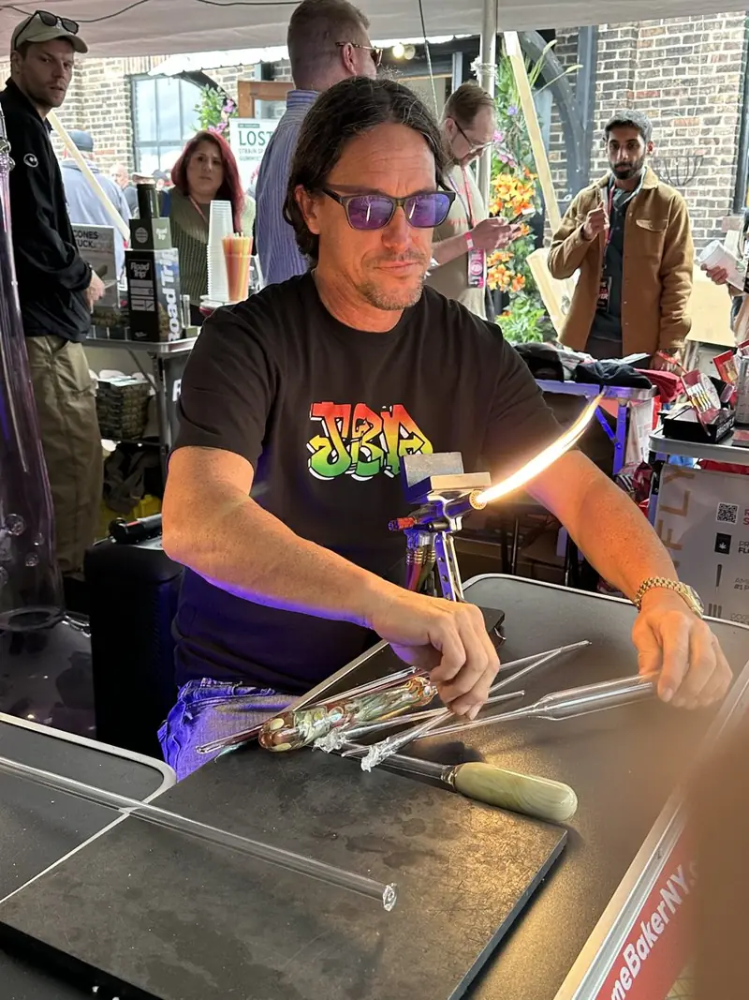
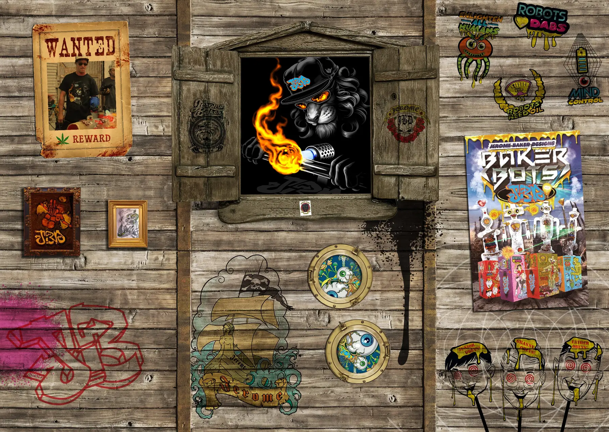
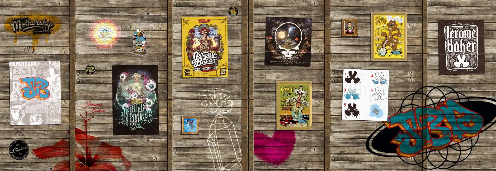

THE STORY
Forged in ritual.
Since 1991.
A kid from Miami follows the Grateful Dead to Oregon, learns to bend glass in a garage, and builds the biggest smokeware shop on the planet. Then the feds come through every door at once.
This is the long version.

Watch it first.
The video plays from YouTube when you press play.
The Dead show.
FOXBORO, 1989 · EUGENE, 1991It starts on Shakedown Street, in a parking lot outside a Grateful Dead show.
Jason Harris is an art kid from Miami. In the lot at Foxboro he meets Bob Snodgrass, the man who invented fuming: silver and gold v@por b@ked into the glass, so a p!pe changes color the more it gets sm0ked. Jason has to know how.
A year later he's in Eugene, Oregon. He looks Snodgrass up in the white pages and talks his way into the garage. No curriculum, no gatekeeping, just a torch, a rod of glass and a handful of apprentices passing the flame around. Eugene goes from three glassblowers to thousands inside a decade. The first Jerome Baker pieces come off that torch in 1991.

The Mothership.
1995 TO 2002Jerome Baker Designs goes official in 1995. The signature is the Mothership: an orb base, a long neck, a snap-and-pull downstem, and frogs, dragonflies, mu$hrooms and lizards riding the j0int. Fumed color that shifts with every session. Little scenes trapped in bubbles.
By 1999 it's the biggest smokeware shop on the planet. The pieces end up on tour buses, in green rooms and in collections, and jeromebaker.com is selling the finest blown-glass tubes in the world online, back in 1998.
- ~70glassblowers on two shifts a day
- 5C@nnabis Cups, including the first Best Glass Cup
- 1998selling online at jeromebaker.com

Operation P!pe Dreams.
FEBRUARY 24, 2003 · 6:00 A.M.The feds come through every door at once.
The house, the studio, the warehouse and the shop in Eugene, all at the same minute. Fifty-five people are indicted across the country, Tommy Chong among them. The Attorney General announces it on national television while Jason watches from a cell.
He gets one phone call. He uses it to tell his foreman to get the torches out the back and into a barn. They are the only things that survive, and they get sold to pay the lawyers. The deal is a year of house arrest and five of probation. The computers, the company and the website all go to the government.
jeromebaker.com, 2003 to 2005“By application of the United States Dr*g Enforcement Administration, the website you are attempting to visit has been restrained by the United States District Court for the Western District of Pennsylvania.”The notice that stood on jeromebaker.com, as the Internet Archive kept it.
Back on the torch.
2003 TO 2012The industry treats him like he's radioactive. So he teaches. He builds out the glassblowing program at the University of Oregon's craft center and works the bench at the Eugene Glass School six days a week, keeping the flame lit in somebody else's studio.
Then Maui. Away from the shop floor, the work turns toward fine art: sculpture, gallery pieces, and The Sphere of Consciousness, a piece presented to the Dalai Lama. He's still making work there today. See the Maui Originals.

Buying the name back.
2012In 2012 Jason buys jeromebaker.com back from the government.
Legalization is starting to reshape the business, and Jerome Baker Designs comes back. Not as a trend and not as a startup. As a continuation. There's the Las Vegas Dream Factory, collaborations around the world, and Bongzilla, one of the biggest glass b0ngs ever made.

New York.
2026Same torch, same weird. The crew came too. Jerome Baker lands in New York with glass, ritual merch, flower and a crew of lunatics off the box art.
In April 2026 c@nnabis was moved to Schedule III. The federal paraphernalia law that brought the doors down in 2003 hasn't changed a word. The glass keeps getting made anyway, one piece at a time, every one of them the only one.


Jason Harris.
FOUNDER, JEROME BAKER DESIGNSRaised in Miami, an artist before he ever touched glass. After Snodgrass, he went looking for every teacher who would have him: Wertheim in Germany under Han Ittig, Murano and Cesare Toffolo in Italy, India, and Pilchuck Glass School, where Dale Chihuly's influence runs through everything.
He built Jerome Baker Designs from a garage into the biggest functional glass maker in the world, lost it overnight, and built it again. Through all of it the idea hasn't moved: glass isn't just an object, it's part of a ritual, from seed to sm0ke.
- Bob Snodgrass
- Han Ittig
- Cesare Toffolo
- Dick Marquis
- Robert Mickelson
- Pilchuck Glass School
“How you sm0ke matters as much as what you sm0ke.”JASON HARRIS, FOUNDER